In December 2013, the town of Ronneby in southern Sweden closed one of its waterworks. Its groundwater contained PFAS, fluorinated compounds from firefighting foam used for years at a nearby air base training site. Residents had drunk the water for a long time, and blood tests later showed strongly raised PFAS levels.
How did a foam sprayed on the ground end up in people’s blood?
Today you will learn that:
molecular structure sets where a compound goes: water, solids, air or organisms;
ionisation changes that answer with pH;
persistence is a separate property, described by a rate;
disappearing from water is not destruction.
Sailors test a firefighting foam (AFFF) hose on an aircraft carrier, 2016. Photo: US Navy, public domain, Wikimedia Commons.
Why PFAS do not go away
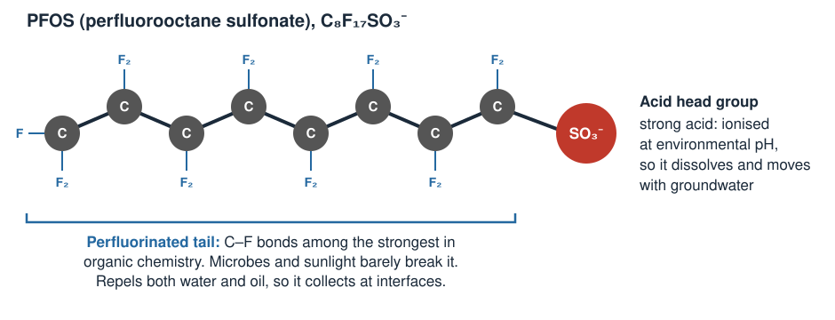
PFOS combines two unusual features: a fully fluorinated tail that hardly degrades, and an ionised head that keeps it in water. That combination makes it both persistent and mobile.
A contrasting story: DDT
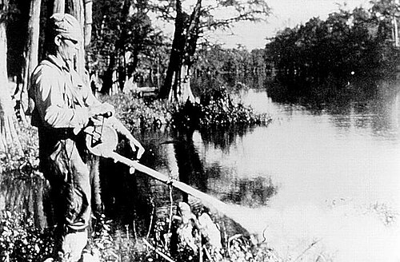
DDT spraying in the US malaria eradication programme, 1958. Photo: CDC, public domain, Wikimedia Commons.
DDT was the most widely used insecticide of the mid-20th century, in agriculture and against malaria mosquitoes.
Like PFOS it is persistent. Unlike PFOS it is neutral and very hydrophobic: it barely dissolves in water and collects in organic matter, sediments and fat.
Sweden banned most uses around 1970. DDT and its product DDE are still measurable in Baltic sediments and wildlife.
Two persistent compounds, two different destinations. Why?
Where can a molecule go?
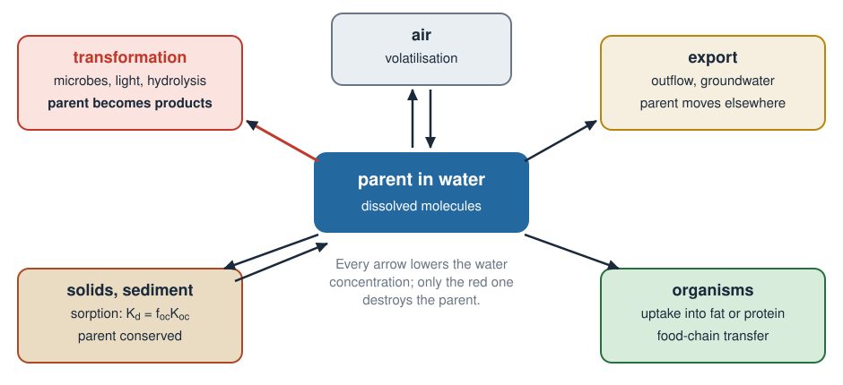
From water, a contaminant can sorb to solids, volatilise, be taken up by organisms, be exported, or be transformed. Only transformation changes the parent molecule. The others just move it.
Measuring phase preference: Kow
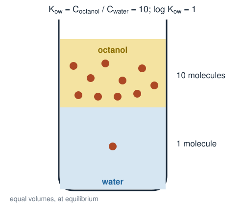
Shake a compound with octanol (an oily liquid standing in for fat and organic matter) and water. At equilibrium:
K_{ow}=\frac{C_\text{octanol}}{C_\text{water}}
The values span many orders of magnitude, so we use log Kow.
Polar groups (–OH, –COOH, charges) favour water: low Kow.
Large, nonpolar, chlorinated molecules favour octanol: high Kow.
Kow is a partition property. It is not a half-life and not a toxicity.
The Kow scale for real compounds
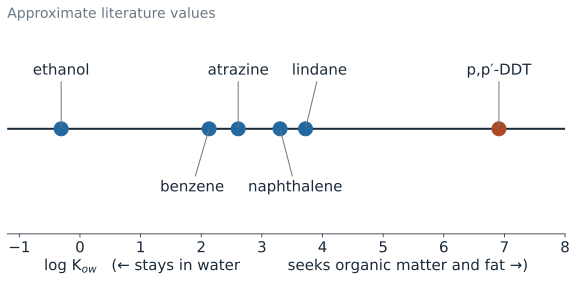
Each unit of log Kow is a factor of ten. DDT prefers octanol over water by roughly ten million to one. Ethanol slightly prefers water. Notice what is missing: PFOS has no meaningful Kow, because it is ionised and gathers at the oil–water interface.
Ionisation changes the problem
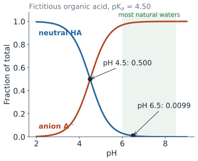
For an organic acid HA:
f_{HA}=\frac{1}{1+10^{\,\mathrm{pH}-pK_a}}
The same form as the carbonate fractions. For pKa = 4.50:
pH 4.50: neutral fraction 0.500
pH 6.50: 0.009901, about 1 %
The anion is far more water-loving. A Kow measured for the neutral form does not describe the total at pH 6.5.
Ionised does not mean unsorbed
Charged organic compounds still bind, but by different mechanisms:
Cations (many amine drugs, some pesticides) sit on cation exchange sites, as in the soil lecture.
Anions such as PFOS bind to proteins, to positively charged iron oxide surfaces, and at air–water interfaces.
So “ionised means mobile” is a tendency, not a rule.
Why PFOS ends up in blood, not fat: it binds to blood proteins such as albumin and is excreted slowly, over years.
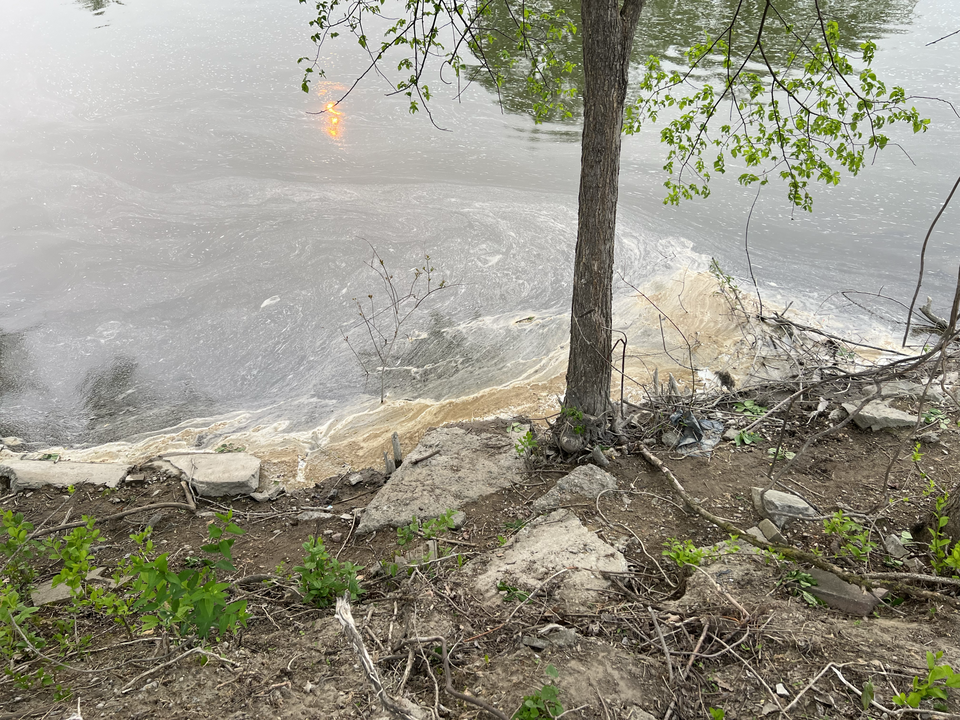
PFAS-containing foam on the Huron River, Michigan: surfactants gather at the air–water surface. Photo: MountainFae, CC BY-SA 4.0, Wikimedia Commons.
From Kow to sorption on soil: Kd = focKoc
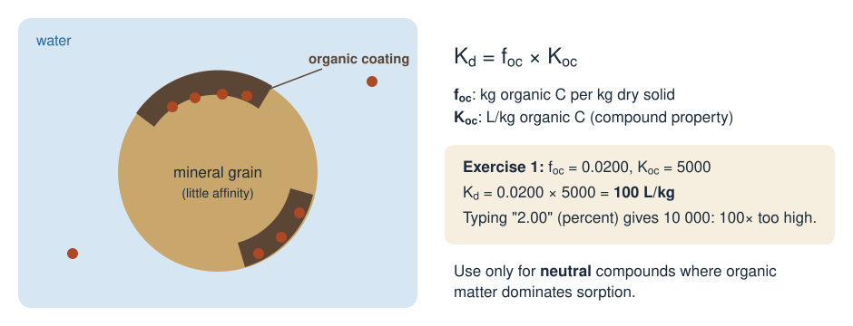
For neutral hydrophobic compounds, the organic matter of a soil or sediment does the sorbing. Only that fraction counts. Two soils with the same compound can differ in Kd by a factor of 100.
How much stays in the water?
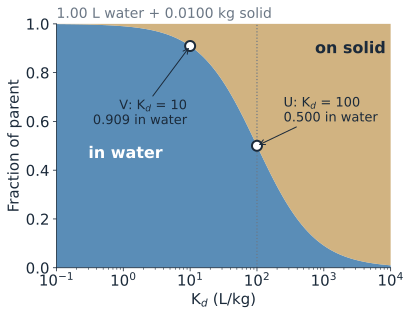
At equilibrium, mass is shared between water and solid:
M = C_w V_w + C_s m_s,\qquad C_s = K_d C_w
C_w = \frac{M}{V_w + K_d\, m_s}
With 1.00 L water and 0.0100 kg solid:
U (Kd = 100): half in water, Cw = 0.500 mg/L
V (Kd = 10): 0.909 in water, Cw = 0.909 mg/L
Persistence: a first-order rate
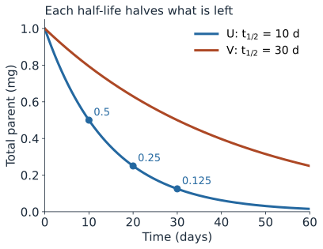
If transformation is first order with constant k and no new input:
The half-life describes how fast the parent disappears, under stated conditions. It says nothing about where the parent is.
Combining the two: the activity C model
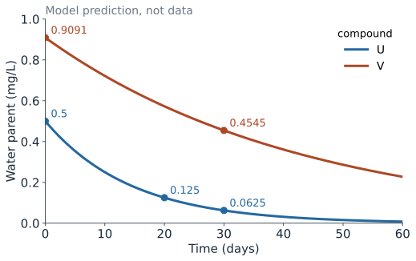
Assume rapid sorption equilibrium and the same k in both phases. Then the total decays exponentially and water concentration follows: C_w(t) = M(t)/(V_w + K_d m_s). V starts higher (less sorbed) and declines more slowly (longer half-life).
Worked example: compound U at day 20
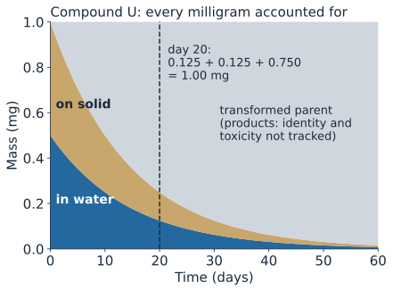
Start: 1.00 mg U, half on each phase, Cw = 0.500 mg/L.
After 20 days = two half-lives:
total parent: 1.00 × ¼ = 0.250 mg
water: 0.125 mg, so Cw = 0.125 mg/L
solid: 0.125 mg
transformed: 0.750 mg
The missing 0.750 mg is no longer U. It did not “go to the sediment”. What it became, the model does not say.
Check yourself
A soil has 3.0 % organic carbon. For Koc = 1000 L/kg OC, what is Kd?
An organic acid has pKa 4.50. Roughly what fraction is neutral at pH 7.0?
For U, double the solid mass to 0.0200 kg. What fraction of parent is now in water? Does the half-life change?
True or false: “Compound X has log Kow 6, so it will persist for decades.”
A falling concentration is not a mechanism
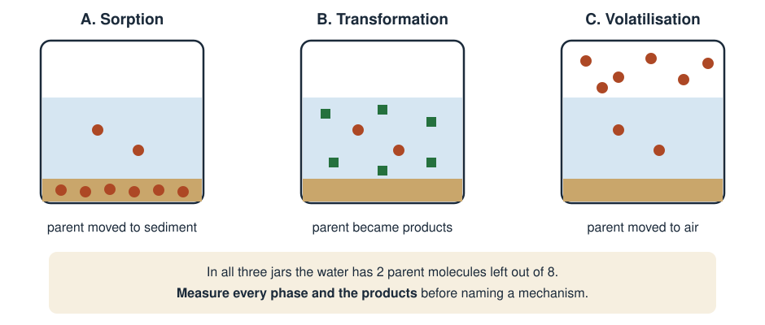
Three different processes give the same water result. To tell them apart, measure all phases (water, solid, gas) and look for products, with good analytical recovery, at matching times.
Transformation is not mineralisation
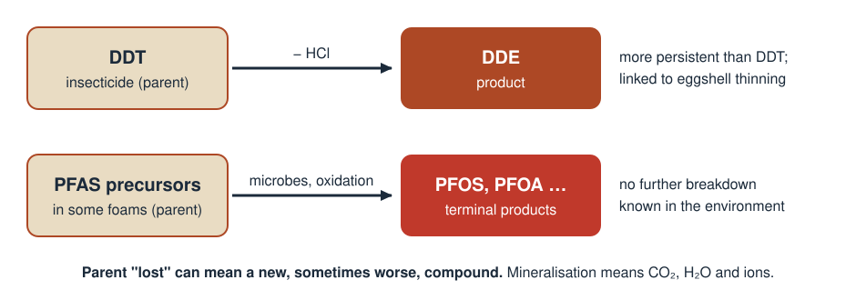
A disappearing parent can leave products that are more persistent or just as harmful. Only complete mineralisation to CO₂, water and inorganic ions removes the problem.
Partitioning into organisms: the sea eagle
White-tailed eagles in Färnebofjärden National Park, Sweden. Photo: LG Nyqvist, CC BY-SA 4.0, Wikimedia Commons.
Hydrophobic, persistent compounds partition into fat. Each step of a food chain eats much more than it retains, so concentrations rise up the chain: biomagnification.
Around the Baltic, white-tailed eagles at the top of the chain had very poor breeding success in the 1960s and 70s. DDE and PCBs were the main causes.
After bans on DDT and PCB, contaminant levels fell and the eagle population recovered. A clear case where chemistry explained, and policy fixed, a problem.
Back to Ronneby: putting the properties together
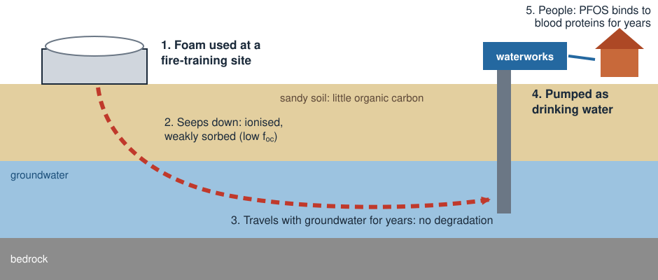
Each step follows from a property: ionised, so weakly sorbed in low-carbon sand; not degraded, so it accumulates and travels for years; protein-binding, so it stays in people. A DDT-like compound would have stayed near the source.
Four separate questions
Question
Property or measurement
Example
Where does it go?
Kow, Kd = focKoc, pKa, volatility
DDT to sediment; PFOS stays in water
How long does it last?
half-life under stated conditions
U: 10 days; PFOS: no known degradation
Who is exposed?
pathway: water, food, air, soil
Ronneby: drinking water
What does it do?
toxicity, measured separately
DDE: eggshell thinning
A strong answer to one question never answers another. High Kow is not toxicity; low concentration in water is not low risk.
Common mistakes to avoid
“Gone from the water means destroyed.” It may be sorbed, volatilised or taken up.
“High Kow means toxic” or “means persistent.” Kow is a partition property only.
“Ionised means it never sorbs.” Cations exchange; anions bind proteins and oxides.
“foc = 2 for 2 % organic carbon.” It is 0.02. A factor-100 error.
“Changing Kd changes the half-life.” In our model it changes only the phase split.
“Parent lost = problem solved.” Ask what the products are.
Explore: sorption and parent transformation
Change Kd alone. Does total-parent persistence change in this model?